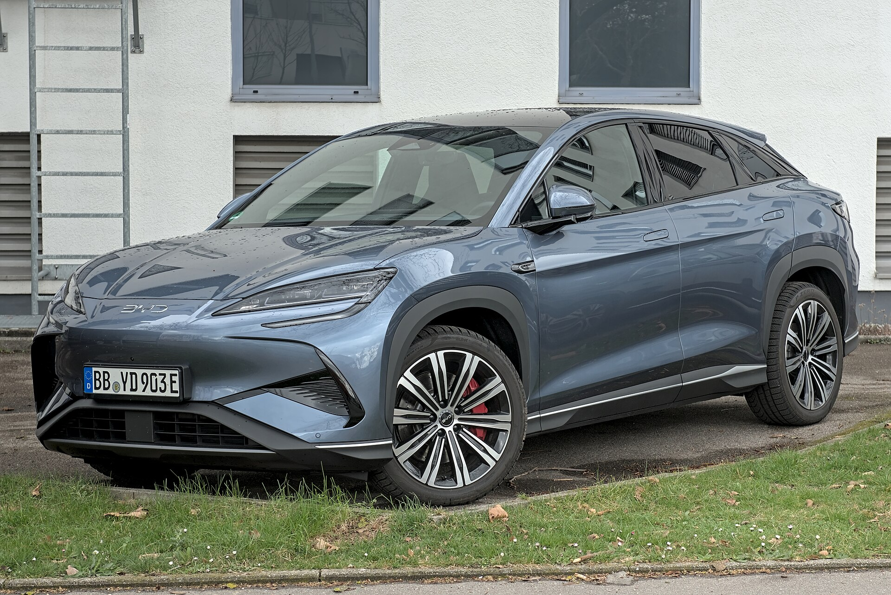

▲ 초가성비를 무기로 한국 상륙을 본격 선언한 BYD의 소형 해치백 '돌핀(Dolphin)' ⓒ Alexander-93, Wikimedia Commons (CC BY-SA 4.0)
대한민국 수입 전기차 시장의 지각 변동이 시작되었습니다. 수입 전기차의 왕좌를 굳건히 지키고 있는 테슬라 모델 Y와, 압도적인 제조 기술력 및 가성비를 앞세워 내수 장벽을 돌파하려는 중국 1위 친환경차 기업 BYD의 치열한 패권 다툼이 본격화되고 있습니다.
수입 전기차 구매를 고민하는 얼리어답터들과 합리적인 예산을 꼼꼼히 살피는 스마트 컨슈머들을 위해, 두 브랜드의 강점과 최근 발표된 보조금 이슈 및 가격 변화 트렌드를 분석해 드립니다.
1. 테슬라 모델 Y — 굳건한 왕좌의 배경과 FSD의 대격변

▲ 수입 전기차 시장의 독보적인 강자로 군림하고 있는 테슬라 모델 Y ⓒ Dllu, Wikimedia Commons (CC BY-SA 4.0)
테슬라 모델 Y는 지난해부터 중국 기가 상하이산 리튬인산철(LFP) 배터리를 탑재한 RWD 모델을 시장에 안착시키며 수입차 판매량의 판도를 바꿨습니다. 현재 모델 Y RWD는 4,999만 원으로 가격을 동결하여 보조금 전액 수령 가이드라인을 충실히 지키고 있습니다.
또한 테슬라만의 독보적인 무기인 자율주행 FSD(Full Self-Driving, 감독형)가 큰 변곡점을 맞이합니다. 테슬라코리아는 2026년 8월 10일부터 기존 일시불(904만 3,000원) 판매를 마감하고, 월 15만 원의 구독제 서비스로 전면 전환을 발표했습니다. 장기 보유 시에는 기존 일시불 구매(8월 9일까지 신청 가능)가 유리하나, 차량 교체 주기가 빠르거나 장거리 여행 시에만 기능을 켜고 싶은 차주들에게는 구독제가 훌륭한 대안으로 작용할 예정입니다.
2. BYD의 국내 습격 — 돌핀 & 씨라이언 7의 출사표

▲ 국내 중형 전기 SUV 시장의 신성으로 떠오른 BYD 씨라이언 7 ⓒ Alexander Migl, Wikimedia Commons (CC BY-SA 4.0)
중국 전기차 시장의 최강자 BYD는 가성비를 전략적 무기로 낙점했습니다. 첫 출사표를 던진 컴팩트 해치백 돌핀(Dolphin)은 기본형 2,450만 원, 액티브 트림 2,920만 원이라는 깜짝 놀랄 만한 공식 출고가표를 들고 나왔습니다.
또한 중형 크로스오버 SUV인 씨라이언 7(Sealion 7)도 기본형 4,490만 원, 플러스 트림 4,690만 원으로 책정되어, 크기 대비 저렴한 전기 패밀리카를 찾는 타깃층에 매력적인 선택지를 제시했습니다. 자체 특허를 가진 '블레이드 배터리(LFP 칼날형 배터리)'를 탑재해 안전성과 거주 공간을 최대한 좁히지 않는 독창적인 하드웨어를 선보였습니다.
3. 보조금 대격변 — BYD 보조금 전면 배제 사태

▲ 배터리 효율 및 재활용 계수 평가로 인해 급변한 수입차 보조금 정책 ⓒ Ivan Radic, Wikimedia Commons (CC BY 2.0)
하지만 한국 전기차 시장에서 가장 큰 변수는 정부 정책이었습니다. 환경부가 LFP 배터리의 낮은 에너지 밀도와 재활용성 패널티를 강화하는 개정안을 지속 추진한 데 이어, 2026년 7월 1일부로 BYD 전 모델이 국가 보조금 혜택에서 탈락(제외)하는 초유의 사태가 벌어졌습니다.
화재안심보험 가입 의무화 규제 및 국내 사후서비스(A/S) 정비망 평가 요건 등 해외 수입 브랜드에 높은 장벽이 부여되며, 기존 보조금을 받고 1,000만 원대 후반에 실구매를 하려던 소비자의 계획에 브레이크가 걸렸습니다. 현재로서는 보조금을 한 푼도 받을 수 없어 출고가 정가 그대로 구매해야 하는 리스크를 안게 되었습니다.
4. 스마트 컨슈머의 현명한 구매 전략
현재 보조금 제외 사태가 터지며, 가격 메리트가 상쇄된 BYD와 여전히 일정한 보조금을 수령하고 충전 네트워크 및 FSD 등 강력한 브랜드 인프라를 지닌 테슬라 모델 Y RWD 간의 실구매가 격차는 더욱 좁혀지거나 역전되는 양상을 보이고 있습니다.
독자적인 소프트웨어 기술과 수퍼차저 인프라, 그리고 오랜 검증을 중시하는 얼리어답터라면 8월 FSD 구독제 출시 전 일시불 구매 막차를 타는 테슬라 모델 Y RWD가 절대적 추천지입니다. 반면, 보조금이 빠지더라도 순수하게 2,000만 원 중반대에 탄탄한 소형 전기차 정가를 전액 부담하고 가성비 세컨카로 이용하고자 하는 틈새 소비층에게는 여전히 BYD 돌핀이 가격적인 매력이 될 수 있습니다.